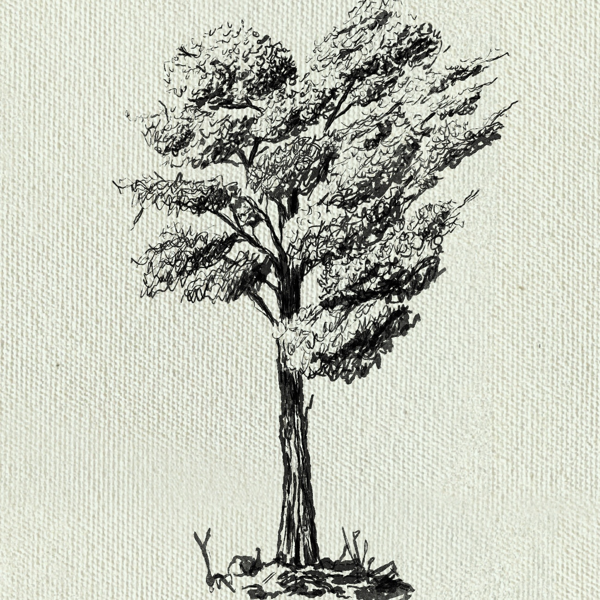

This is
LoomScopeAI
, a collection of images created using procreate
Twitter
GitHub
Instagram
500px
Soundcloud
Kildermorie Loch - Highlands of Føroyar
Town of Kildermorie
Føroyar Monk
Føroyar
Southern path to Caerdown
Sanctuary
The Elemental
Road to Kildermorie
Fractal Landscape